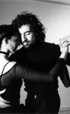
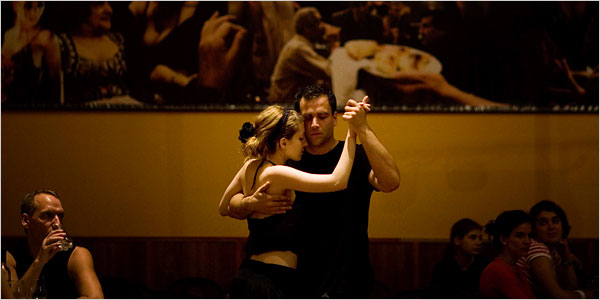

How We Are Together
7 November 2008 — Susan Brown
It is not about how we dance, but how we are together!
from Taboe Tango Camp
Egotism or Cluelessness?
A friend of mine who teaches in another city recently announced that admission to her intermediate/ advanced classes would be by invitation or audition only. She had to take this step because she was having a problem with too many people showing up who weren't able to keep up with the class and were impeding the progress for those who were truly intermediate and advanced. She said, "Other students in class should be your peers, not your teachers."
At (now defunct) Tangri-LÁ,
Johanna Siegmann writes a similar story about another instructor who was offering an intermediate/advanced workshop:
Like Johanna, my sympathies are with the instructors, who are likely risking losing many students—not only those directly excluded, but those who might stay away because of what they hear.
It's interesting to ponder why the practice of overrating oneself seems so common in tango—and elsewhere in
life. We all likely know self-anointed tango "instructors" who can barely dance themselves.
Johanna offers one explanation, "Unfortunately, there appears to be a deplorable lack of humility these days,
everywhere you look. And if you are looking at Tango, it is dismally present everywhere. As if the
learning process was demeaning and disrespectful. As though room for improvement was a personal flaw.
Or admitting we need training wheels is somehow insulting and humiliating." (aka egotism?)
Without disagreeing with Johanna, I would offer another explanation. As is pointed out
below, incompetent individuals fail to recognize their own
inadequacy because they tend to overestimate their own level of skill and fail to recognize genuine skill
in others. (aka cluelessness?)
Either way, lack of self-awareness is the root of many evils.
Wanting What You Want
"Remember no project is too ambitious if you crave the result enough." Kay Gardiner and Ann Shayne
Unskilled and Unaware
In a 1999 article
published in the Journal of Personality and Social Psychology, Cornell psychologists
Justin Kruger and David Dunning find that incompetent individuals fail to recognize their
own inadequacy because they tend to overestimate their own level of skill and fail to recognize
genuine skill in others.
Who Holds the Key?
"The ultimate key to my heart is held by myself." Roxanne Swentzell
Remembering
"It's so important to remember where you come from, because if you don't remember where you come from,
you don't know who you are or where you're going." Roxanne Swentzell
Professionalism and Creativity
"The professional photographer takes assignments from 'without'... [T]he creative photographer...takes
assignments from 'within'... The conflict from assignments from 'without' versus those from 'within'
often perplexes the serious photographer." Ansel Adams
Chasing the Steps
At (now defunct) Tangri-LÁ,
Johanna Siegmann writes:
Everyday Goals
According to Warren Buffett, Benjamin Graham once expressed to a friend
the thought that he hoped every day to do "something foolish, something
creative, and something generous."
So Much More
At (now defunct) Tangri-LÁ,
Johanna Siegmann writes:
Taking Control of One's Own Development
At some point, most tango dancers choose not to improve because the
cost of developing skills isn't paid back with a sufficient improvement
in the quality of the dance experience. A person with a greater interest
in tango or lower development costs may pursue the development of their
skills further, but still reaches a point where the additional cost of
developing skills outweighs the gains. In a partner dance, such as
tango, the skills of one's potential partners can greatly influence how
much furthering one's own skills improves the dance experience. The
return to developing one's own skills is greater when one's potential partners
are skillful than when they are mediocre.
The required complementarity of skills in dance partners can lead to
a situation in which an entire community remains mired in mediocrity—even
though many individual dancers may wish that they and everyone else had
better skills. In an established community dominated by mediocrity,
a number of individuals seemingly have stopped their development as tango
dancers at a relatively low level. High costs to developing skills
could contribute to such mediocrity. Maybe the community is mired
at a low equilibrium created by group dynamics—and the view that everyone
dances with everyone. Each member of the community thinking
strictly of their own enjoyment from dancing stops developing skills when
their own additional enjoyment from developing those skills just offsets
their own additional costs. Each person acting individually bears
their own development costs but gains only a portion of the improved dance
experience. Some of the benefits are distributed to their partners.
If self-interest dominates as might be expected, individuals don't take
into account how their skills affects others and do not pursue the development
of tango skills to the point that others in the community would like.
Consequently, each member of the community would like everyone in the community
to develop a higher level of skills, but no one individual acting alone
will do so. In addition, highly skilled dancers may find it difficult
to keep their skills honed while dancing in a community dominated by mediocre
dancers—further reinforcing the mediocrity.
In many activities dominated by mediocrity, those who have the aptitude
and the desire to improve often find that a strong personal drive to excel
can propel them well beyond where their own community is mired. But
tango is a partner dance, and it is better to find at least one partner
who is willing to work together toward the same goals of highly skilled
dancing—by taking some private lessons, attending workshops in other cities
and practicing a lot. But even if an individual couple working together
succeeds in boosting their skills dramatically, they could find their enjoyment
diluted when they dance with others in their own community, or they could
find themselves feeling isolated when they no longer want to dance with
others in the community who haven't made a similar committment to develop
their skills.
Perhaps a better idea is to form a small practice group of both men
and women, in which everyone has similar goals, is willing to work and
to create a supportive environment for each other. In addition to
practicing together, the group might want to consider organizing lessons
for themselves, attending workshops in other cities as a group, etc.
Most importantly, everyone in the group must make a committment to developing
a high level of skills for dancing tango. When the group has succeeded
and begins attending milongas in the community, there will be less dilution
of the efforts because everyone in the group will have several potential
partners from the group with whom dance at milongas. Moreover, the
group's development may act as an impetus for better dancing in the entire
community because an increase in the number of better dancers in a community
raises the return to improving skills, even for those were outside the
group.
Some Thoughts about Leading
Shortly after dancing with Pablo Veron at the 1999 Santa Fe Tango Week
a woman told me in a gushing, dazzled tone, "I didn't feel like he led
me so much as I felt like he willed my movements." Ever since then,
what she described has been my goal as a leader—finding the balance between
strength, grace and gentleness that conveys the lead in such a way that
the woman doesn't feel at all pushed around, that she has a good idea what
I am trying to have us accomplish, and that she is able to express her
own voice.
On Tango-L,
Tom
Stermitz provides a list of the many ways to lead a woman's movement::
Tom says that he uses all of the techniques on the list except shoulder
lifts and axis bending. He doesn't like these two for tango.
He adds, "The good leader uses multiple techniques at the same time, which
can make the lead extremely subtle, yet extremely clear." What Tom
describes sounds to me a lot like willing her movements.
I have taken a somewhat broader approach to learning how to lead, but
one that is consistent with Tom's list. As I see it, nearly all of
the lead as conveyed by movement of the man's torso, regardless of style.
The man's right arm sometimes adds reinforcement as an extension of his
torso's movement, but without any rigidity or sense of pushing. Use
of the hand in leading is usually reserved to signal a few of the occasions
when the follower is asked not to shift her weight as the man moves.
There may be other exceptions, but nearly all uses of the hand to lead
that I have seen taught are completely unnecessary and potentially unpleasant
for the follower. Dropping or lifting a shoulder or bending the axis
can take away from the perceived quality of movement in tango. The
voice is not used for leading.
Whether one wants to pursue Tom's detailed list or take my broader approach
as an avenue for developing leading skills, it seems appropriate to explore
and be conscious about how each of the leader's movements contributes to
the intended lead, and then develop a body sense for the appropriate leading
movements. Either way, I see the goal as being the same—finding the
balance between strength, grace and gentleness that conveys the lead in
such a way that the woman doesn't feel at all pushed around, that she has
a good idea what the leader is trying to have them accomplish, and that
she is able to express her own voice.
Gender Imbalance in Tango
In Dallas/Fort Worth area, the tango community seems to have a roughly
equal balance between men and women. In some North American cities,
the gender balance in the tango communities can be quite unequal, usually
with more women than men.
On Tango-L,
Tom
Stermitz provides some insight about why that happens:
"Retention rates in tango are low, so the filtering process is determines
the gender ratios. Out of a new beginner class, maybe 90% quit.
If the rejection rate is unbalanced, say 90% women and 95% men, the teacher
is creating double the number of women. In other words, the filtering is
so drastic that very small changes in the filtering process has a huge
effect down the road."
Tom also offers some specific suggestions for retaining men in his Tango-L
post.
It Takes Two Minds to Tango
According to Judi Neal at Edgewalkers,
"[A]n edgewalker is someone who walks between two worlds." At Boundary
Crosser, Carol Ross describes a boundary crosser as someone traveling
in many worlds, fitting in none.
On Boundary
Crosser, Carol Ross wrote:
"I recently attended a friend's 50th birthday party ... What had not
changed [about my friend] was his distinctive, rich voice, his engineering-oriented
career, and his love of tango. ... In fact 90% of the party goers were
[his] fellow tango dancers. ... The first part of the evening was spent
talking to tango enthusiasts, about how they got started, where they dance,
why they love it so much, and what they do when they are not dancing.
During the second half of the evening, I was the keen observer of what
makes this dance so magical, from the outfits worthy of a serious whirl
on the floor, to the smooth moves from plenty of experts in full body motion.
It was full immersion into another world for one evening.
"[I]t turned out most people at the party had been practicing tango,
consistently, for five or more years. ... People don't take up the
dance lightly. And like my friend, most had long-time careers in
something completely different. The woman who sat across from me
at dinner ... remarked how tango dancers fall into two camps—those in the
'touchy feely' professions (e.g., musicians, massage therapists, artists,
nurses) and those in analytical professions (e.g., software developers,
product managers, network administrators). She explained that it takes
both sides of the brain to do tango and only those who can make the leap
to the 'other side' become good at it.
"The dance takes close communication between the partners. ... It turns
out that alot of the communication comes through the chest. ... If this
wasn't complicated enough, there is no percussion in tango music. Finding
the beat can be a challenge for newbies. Other oddities I observed included
full stops in the dancing--complete pauses that are timed to integrate
seemlessly with the rest of the movement—and a swiveling of the female
hips reminiscent of a secret handshake. ... Unlike the stereotype of tango
as a movement of wild abandon, I observed it to be a thinking and sensing
person's dance, one requiring whole brain thinking."
Being Original
"Be regular and orderly in your life like bourgeois, so that you may
be violent and original in your work." Gustave Flaubert
Exploring Movement
"To create a space where a person can explore his or her movement in
a safe place is much more important on any level of dancing than the moves
or technique." Nina Pesochinsky
Kinesthetic Sense
On Tango-L,
Nina Pesochinsky wrote:
"Walking in Buenos Aire is good for tango, true. But what is much
better is to ride the old Mercedes buses. If you can keep your balance
without holding on to anything, and do it every day, the tango improves
dramatically. :)
"That 20 year old bodies are better than 40 year old bodies. Not
true. 20 year old bodies are ignored and disconnected usually because
the person is some place else. If one has been doing something with
his or her own body since the age of 20, and has been doing it for 20 years
(not tango, but something that involves some consistent and purposeful
cultivation of the body), his or her body will be much, much better at
40 than at 20.. The problem is that many people arrive to tango after
their bodies had fossilized, and after living in their heads for decades.
"The longer I dance, the less I understand who is a beginner and who
is advanced. I believe that the problem is tango dimentia that sets
in after some time of dancing—one sort of forgets the way home and it does
not matter. :)
"Tango alone cannot teach a person to move and to be connected with
the body. Other things are needed. There is a reason why people
come to tango. More often than not it is subconscious. But
each person does know what he/she needs or wants and is able to pursue
it, if the conditions are right. To create a space where a person
can explore his or her movement in a safe place is much more important
on any level of dancing than the moves or technique.
"When people begin to dance, something important and big has already
began to happen to their psyche. Some call it the emergence of the
authentic self. It is a process for everyone. I believe that
it is a very painful process. All transformations are painful.
"I believe that if a tango teacher recognizes that such a transformation
is taking place in his or her students, he or she can tend to the space
that is needed, and the trust that gets built, and gently help them move.
It is amazing to see the incredible speed with which people learn tango
in these conditions. The role of the teacher then become that of
helping a person to emerge authentic in the dance."
Troileana
In the liner notes for her CD Troileana, Liliana
Barrios wrote:
"This Gardelian exploration undertaken by Troilo and his friends lights
up the the Golden Age of tango-song. Tango that is felt through the
music, imagined in the lyrics and danced by our feet. This is the
tango that I wish to celebrate in Troileana.
"Troilo's repetoire is magnetic, substantial, demanding. It is
demanding on the listener because these tangos make you (almost, almost)
want to slit your wrists. It is demanding on the musician because
while its technical difficulty is first of all imposing, once this has
been mastered, it must be abandoned in order to reach the emotion.
And it is demanding on the singer, who must embark on a rollercoaster ride
of high and low notes, rapture and silence, coarseness and tenderness.
"If anything, I have attempted to interpret these pieces with truth.
With depth of feeling. As if they were my own veins."
For more information, about Liliana Barrios and Troileana, see
www.lilianabarrios.com.ar.
Close-Embrace-Style Tango at a Crossroads?
The terms used to describe styles of tango are not uniform. What
one person calls "close-embrace-style tango" another might call "milonguero-style
tango"—neither term necessarily referring to the way that milongueros dance
tango. Whichever of these two term is used, what is meant is an attempt
to teach a form of tango that is more suitable for dancing socially than
for show.
On Tango-L,
Trini de Pittsburgh (aka Trina Regaspi) wrote:
For some related thoughts, see On
Style and Styles (4).
On Style and Nuevo Tango
On Tango-L,
Nina Pesochinsky wrote:
"I am all for tango nuevo in good form with technique and a lot of training.
... Gustavo, Fabian, Chicho and some others have technique that allows
them to have a true style, chosen by them and not by default because they
cannot do anything else. Most of those who imitate [Gustavo, Fabian,
Chicho] and call themselves 'nuevo' dancers usually do not have such technique,
tend to be quite lazy in regard to mastering the dance in a technical sense
because they cannot dance anything else, are usually awful to dance with,
look terrible and appear to be deaf, since most of the movements tend to
happen outside of the music.
"Originally, nuevo tango was something very exciting. We all did
it and worked like demons. And loved it. Now it is just a lot
of bad dancing (with a few exceptions)."
For some related thoughts, see Incomplete
Education,
Approaches to Learning
and Authenticity, and On Style
and Styles (4).
Seduced by Tango

Seduced by Tango (aka Tango Seduction) was to be a
feature-length documentary hosted by Robert Duvall and intended for PBS
broadcast. The project was cancelled for lack of funding later in
2008, What follows are my comments about the project from 25 March
2008.
Seduced by Tango follows acclaimed Tango artist Pablo Veron as he works
with non-professional dancers from around the world. Each of the
dancers is from a different culture, and each has a different story to
tell. Although their differences might be profound, tango is what
unites them as they work together toward a common goal: to perform tango
at a milonga in Buenos Aires, the birthplace of Tango. Along the
way, the viewers come to understand the dramatic history of tango as
dance, music, and a metaphor for human connection.
In the video about Seduced by Tango, the producer/director Catherine
Tatge says, "Tango has spread all over the world, and the passion that
people have for it is just remarkable. I mean once you start dancing
tango, it's like you can't stop."
Do you dance tango socially? Have you been seduced by tango?
Has your life been changed by your association with tango? If so,
you and your dance partner may be able to participate in the making of
a feature-length documentary film, led by Emmy Award winning director Catherine
Tatge. For information about participating in the film, see the Tango
Seduction or Seduced by Tango websites. (Both sites
are gone.)
Argentine Nights

Improvising
"The greatest improvisers of all time spend their effort not on improvising
but on practice." Chris Kimball (of America's Test Kitchen)
To Dance Tango
On Tango-L,
Chris John Jordan wrote:
For some related thoughts, see StepMeisters
Abound and The Music Is Essential.
Why He Did It
In writing for this column, and in thinking about tango, I frequently
find myself drawn to ideas and stories that help define artistry and mastery.
In the Winter 2007 issue of Jazz
Improv magazine, Sue
Terry recounts a story that was told to her by bassist Chip Jackson
who had heard it from jazz pianist Billy Taylor. The essence of the
story follows.
Many years ago, when jazz pianist Billy Taylor was on an extended engagement
on the West Coast and jazz pianist Art Tatum was living and playing on
the West Coast, the two would hang out together in after-hours clubs, where
bands often played informally all night long.
One night Taylor and Tatum were in such a club, when a European approached
Tatum and introduced himself as a pianist and Tatum admirer. He said,
"With your permission, I'd like to play your version of Tiger Rag."
(Tatum was known for playing in an extremely complex style.)
The man sat down and played the difficult piece note for note, just
as Tatum had recorded it. Disinterested, Tatum sat at the bar and
ordered another beer.
Taylor said to Tatum, "Ths guy is pretty good."
But Tatum shook his head and responded, "He knows what I do, but not
why I do it."
26 October 2008 — Stephen Brown
"In the past, these workshops were attended mostly by students who had woefully over-valued their actual
skills, being barely able to walk while in the Tango embrace, much less be intermediate or advanced at anything
other than over-appraising their abilities. ... [A]fter being forced to devalue several intermediate/advanced
workshops due to a preponderance of attendees who were neither—[the instructor] addressed the issue head-on" by
reminding the students that they needed to approach learning with humility which included the instructor's appraisal
of which level of classes were appropriate.
26 October 2008 — Susan Brown
4 October 2008 — Stephen Brown
7 September 2008 — Stephen Brown
2 September 2008 — Stephen Brown
1 September 2008 — Stephen Brown
18 May 2008 — Stephen Brown
"'Chasing the steps' may be one of the most perfect phrases I've ever
read regarding Tango. For me it describes the type of dancer that
doesn't get 'it' or has not yet gotten 'it'. ... [A] lot of us eventually
stop chasing the step in order to chase the connection."
8 May 2008 — Susan Brown
6 May 2008 — Stephen Brown
"In the universe of the tango embrace, the supreme being is intimacy,
not sex."
2 May 2008 — Stephen Brown
30 April 2008 — Stephen Brown
- leader changes weight
- follower steps on the slow beat unless prevented
- leader shifts axis
- leader lifts shoulder (uggh!)
- leader bends axis
- leader settles hips
- leader pushes hips out
- leader rotates (spirals)
- leader rotates (pivots)
- leader lifts and set down follower with arm
- leader uses tummy to lift and set down
- leader uses hands to move follower
24 April 2008 — Stephen Brown
"In the beginner classes, the gender ratios are always close to 50/50.
The problem is in the upper level classes. I don't want to be harsh,
but look at the Adv-beginner and Intermediate classes for the different
teachers in one community. Some are 50/50 some are 80/20. In
other words, the problem is methodological and intentional (or ignorant).
23 April 2008 — Stephen Brown
"To find a group of natural boundary crossers, join a community of
tango dancers.
22 April 2008 — Susan Brown
22 April 2008 — Stephen Brown
21 April 2008 — Stephen Brown
"If someone is comfortable with his/her own body, there is nothing
and no one that can 'make' this person to be uncomfortable. What
happens instead is that people ignore their discomfort in the regular life
activities, move themselves out of the body and into the head, and stay
there until they arrive to tango. Tango is just a mirror of what
is already there.
14 April 2008 — Stephen Brown
"[Anibal] Troilo was a passionate admirer of [Carlos] Gardel and spent
his life fathoming the depths of the soul that had already been mapped
out by the Mute One. For this purpose, he used his musical genius
and the compass of his poets. Troilo, whose openess and generosity
was legendary, was very parsimonius in his choice of lyricists: only the
best would do. And, if truth be told, a considerable part of great
Argentine poetry can be found in tango lyrics. Poetry that in Troilo's
pieces carries the power of lived experience.
12 April 2008 — Stephen Brown
"It seems to me that we may now be at a crossroads. The close-embrace
'movement' began as an answer to more show-style teaching methods (complicated
patterns, open-embrace, etc.). As close-embrace became better appreciated,
taught, and practiced in the U.S., it started to incorporate some nuevo
elements. Both styles encouraged vocabulary that was organic.
However, the close-embrace that I see most of the time is different from
the style that I see the milongueros do. The milongueros do a lot
of basic steps but add a lot of footwork for musicality. But now
that close-embrace (in whatever form) has become more of the norm, are
we now interested in it becoming more showy? I've noticed that it's
the beginning women who want to do the showy steps (boleos, volcadas, leg
wraps), and the men oblige them. And I can see it heading back to
where we started—show tango."
4 April 2008 — Stephen Brown
"There is a huge confusion about 'styles' in tango. Some 'styles'
are nothing more than bad form, bad technique, and, on the whole, bad dancing.
... People often select a 'style' without having the technique to build
it on. Dancing in a 'style' without a technique is a lie, a cheap
immitation of something that could be fabulous.
25 March 2008 — Stephen Brown
18 March 2008 — Stephen Brown
Can anything match Argentine Tango for first, second, third or lasting
impressions? This picture accompanies "Argentine
Nights" an article in the March 16 issue of the New York Times
about expatriates and various aspects of Buenos Aires nightlife including
tango.
7 March 2008 — Stephen Brown
21 February 2008 — Stephen Brown
"To 'dance tango' is to dance the music that is tango."
06 February 2008 — Stephen Brown

Tango Argentino de Tejas